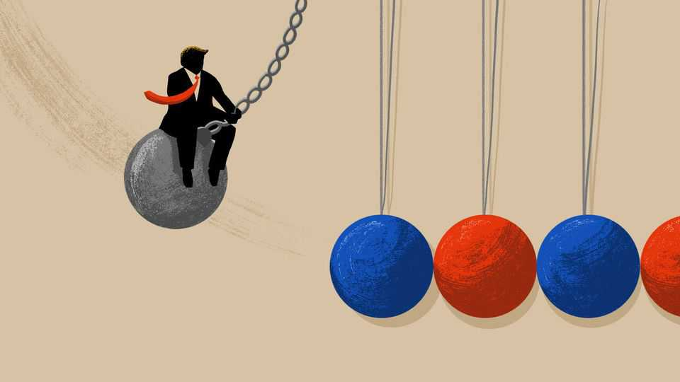

MAGA foreign policy is a mess
Democrats disagree on what comes next

Oct 22nd 2026
“INEVER MEANT to start a war…I just closed my eyes and swung,” sings Miley Cyrus in “Wrecking Ball”, a break-up ballad that seemed to play on every American radio in 2013. Though melodically a bit relentless, the pop song deserves a revival as a guide to the second-term statecraft of President Donald Trump.
It is clear that traditional foreign-policy theories are a poor guide to Mr Trump. That offers both risks and opportunities to anyone running to be America’s next president.
This newspaper has noted Mr Trump’s wrecking-ball tendencies before, but in the two years before the next presidential election his yen for demolition has a specific impact. It has broken the “pendulum theory”, a once-reliable tool for predicting American foreign policy. Going back to Richard Nixon and his successor Jimmy Carter, most presidents have (over-)corrected for the biggest flaws of the guy who came before. In reaction to Tricky Dick’s devious realpolitik, the Carter presidency offered hairshirt moralising. Before long, voters felt that America was disrespected and chose can-do Reaganite optimism. When Americans wearied of George H.W. Bush, a wise but stiff statesman, they elected feel-your-pain Bill Clinton. After shoot-from-the-hip George W. Bush, Americans fell for cool, cerebral Barack Obama, before souring on haughty brainiacs and betting the country on Mr Trump.
Today the theory is less use, because Mr Trump swings every which way. When bullying Ukraine to settle with Russia, he is a might-makes-right realist. In Venezuela his rule-by-proxy would impress a 19th-century imperialist. In the Middle East he scorned regime change right up until his bungled war to bend Iran to his will. He declares that communism menaces America, but calls China’s party boss, Xi Jinping, his friend. The one constant is an impulse to smash the status quo. Cue mental images of Mr Trump atop a demolition ball (hopefully, unlike Ms Cyrus’s music video, the 80-year-old is wearing more than Dr. Martens boots).
It is quite plausible that this president will be hooted from office after wrecking America’s good name (though AI dominance could create riches and clout). Successors wishing to do the opposite will be spoiled for choice. For the foreign-policy pendulum to swing through a full arc, the 48th president could put the national interest ahead of personal profit. Alternatively his successor could avoid reckless wars and shun regime change. The next administration could work to rebuild alliances, pledging to help Europe confront Russia and friends in Asia deter China. All these options would break with some version of Trumpism.
The range of options is especially wide for Democrats. Whether Mr Trump’s vice-president, J.D. Vance, clears the field or faces a contested primary, Republicans will be wary of angering the MAGA faithful by repudiating Mr Trump.
Because Democrats are a self-indulgent bunch and—for a political party—surprisingly bad at politics, they are responding to this moment of opportunity with a navel-gazing argument. Conversations with foreign-policy heavy-hitters in Washington describe two broad camps, one centrist and one on the progressive left. These agree that voters care most about domestic and economic issues: there is much talk of heeding the kitchen-table concerns of working families. Yet each camp knows, too, that the outside world has a habit of intruding.
Responding to demand, delegations of Democratic thinkers and former officials have begun meeting foreign governments and politicians. One such group, involving both moderate and leftish Democrats, visited Brussels, London and Paris this month. A consistent message from these envoys is that the old post-1945 order is not coming back, and that some pillars of Trumpism—rhetoric about putting Americans first, and a focus on industrial production—will remain, whoever wins.
Trump-era tariffs are divisive. Polls suggest that voters blame them for high prices. Centrist Democrats cannot decide, though, whether it is better to juice the economy by scrapping most import taxes on taking office, or keep them temporarily as leverage over trade partners. The left believes in protected favoured industries (which will lobby to keep trade barriers) and likes tariff revenues.
A loud group would bar from future service those Biden-era officials who worked on Israel policy, deeming them steeped in Gazan blood. A cross-party consensus exists to deny Israel uncritical support. Some on the left would pull America out of the Middle East and offer only cautious support for Ukraine.
China sparks sharp disputes. Centrists believe that America is in an epochal contest with China for global leadership in technology and the world order. Prominent leftists call that overblown and hope to work with China on climate change and other global challenges. Some, ludicrously, imagine China will permit its workers to ally with America’s to agree on global minimum wages. Unfortunately for such China dreamers, their growing anxiety about AI safety and the power of big tech leads in another direction. Politically no Democrat can safely call for the slowing of American AI firms without calling for their Chinese rivals to be held back, too. That would involve imposing export controls on high-end computer chips and tools to make them, which would enrage China.
In some fields Democrats can break with Mr Trump while offering elements of continuity. Shrewd Democrats can keep tough border controls, which voters like, but promise less cruel enforcement of immigration laws inside America and a warmer welcome for legal migrants. His proposed defence budgets are so large that hawkish Democrats can spend less without much fear of seeming weak. Disruptive, unknowable change is coming: the thing to know about wrecking balls is that they are erratic. ■